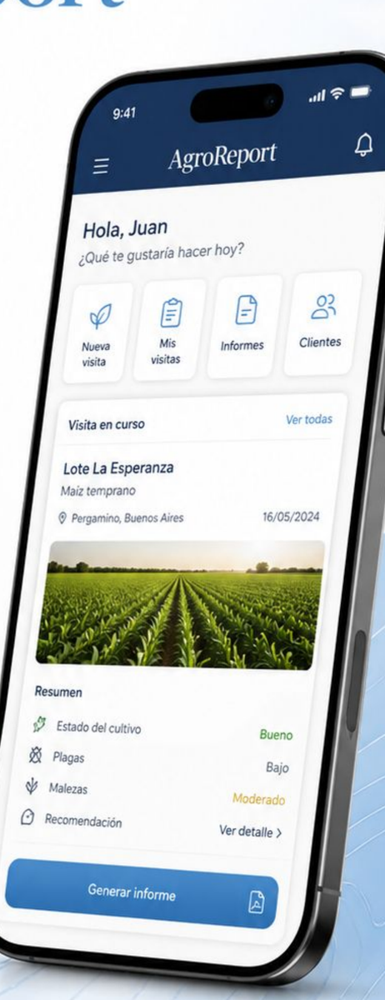
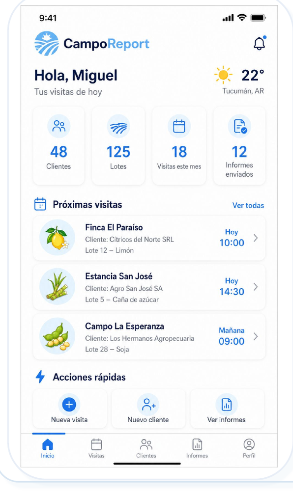
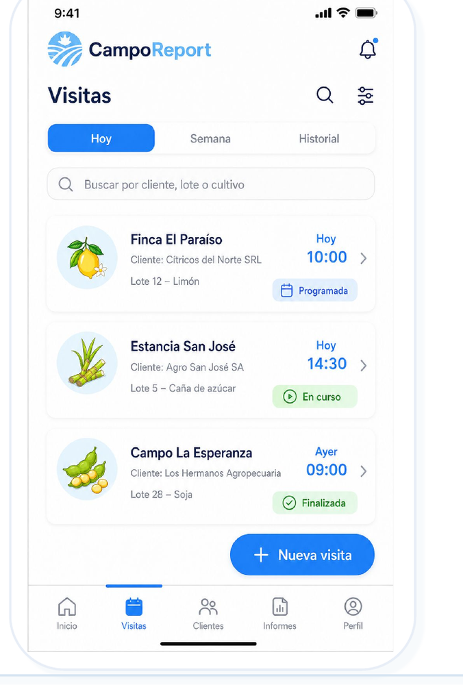
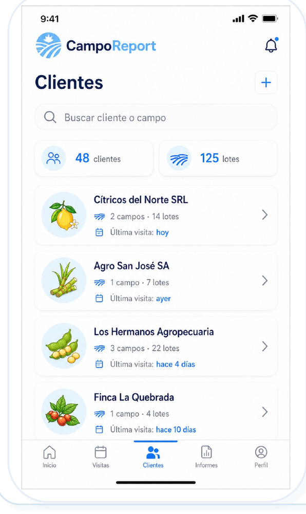
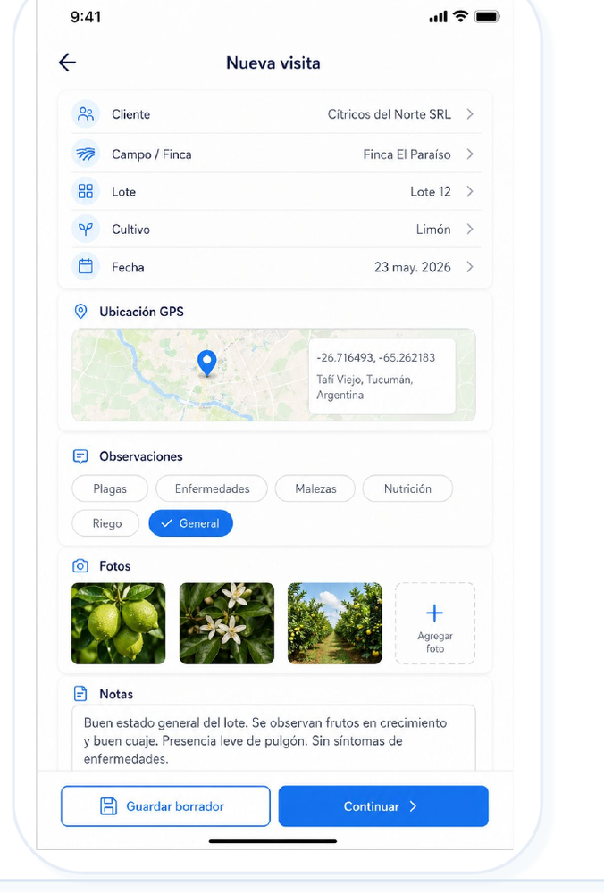
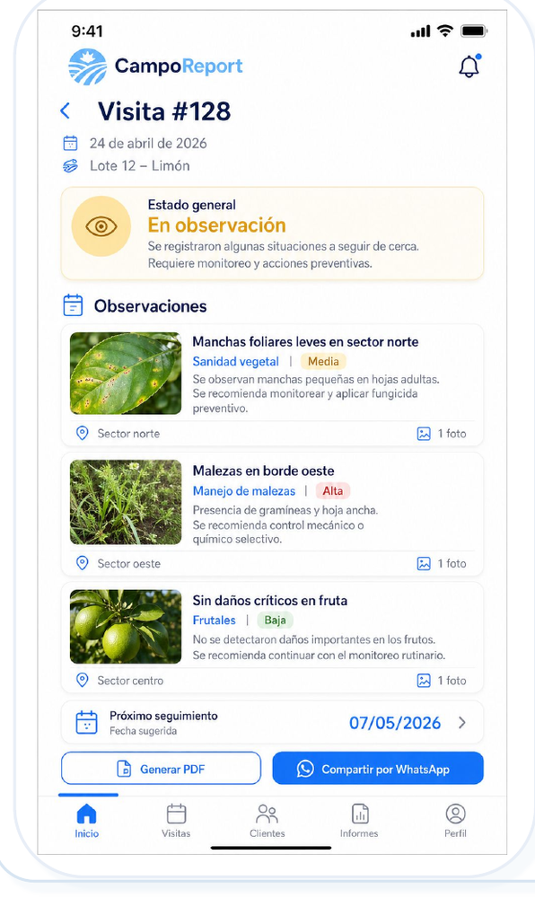
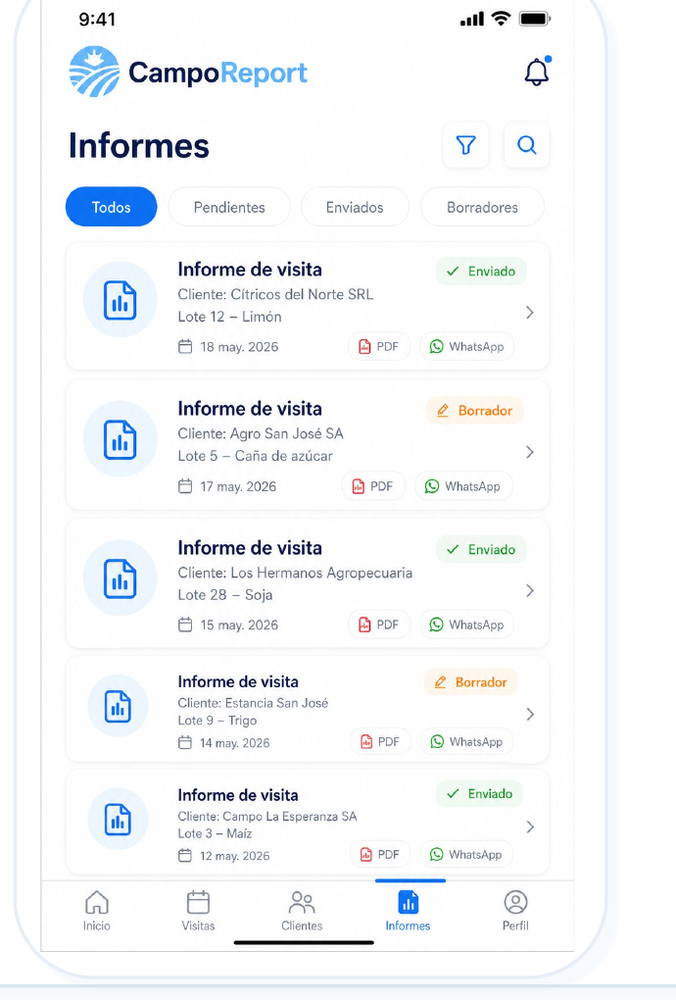
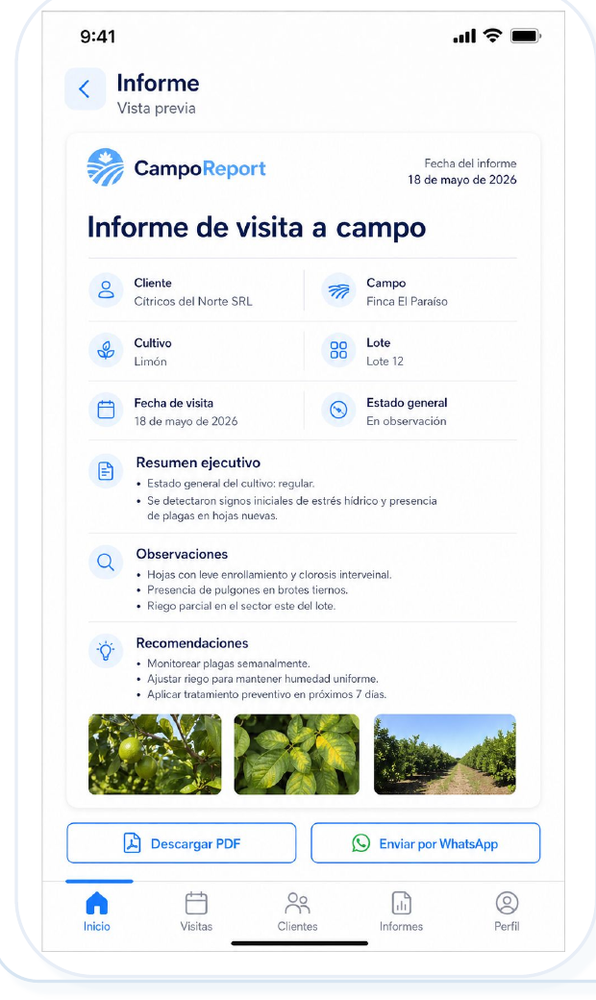
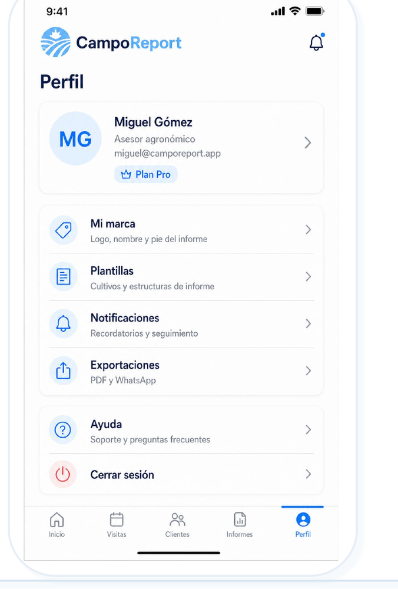

Menos carga administrativa
Dejá de reconstruir la visita al final del día copiando fotos, audios y notas.
AgroReport ayuda a agrónomos y asesores a registrar observaciones, fotos, GPS y recomendaciones durante la recorrida, y convertir todo eso en un informe claro, profesional y listo para enviar por WhatsApp o PDF.
No necesitás otra plataforma pesada. Necesitás informes claros.
No es otra plataforma agrícola compleja. Es una herramienta simple para documentar visitas y demostrar valor técnico.

Muchas herramientas del agro son potentes, pero demasiado amplias para una necesidad diaria: registrar bien una visita técnica y entregar una recomendación clara al cliente.
Dejá de reconstruir la visita al final del día copiando fotos, audios y notas.
El cliente recibe un informe entendible, no un tablero que tiene que aprender a usar.
Cada visita queda documentada con evidencias, ubicación, observaciones y recomendaciones.
AgroReport no intenta gestionar toda la empresa agropecuaria. Se enfoca en informes de visitas.
Una app simple para resolver un dolor concreto: convertir trabajo técnico en reportes profesionales.
AgroReport ordena ese caos y lo transforma en un informe listo para compartir.
Menos Excel, menos WhatsApp perdido, más trazabilidad.
Ves visitas, clientes, campos y accesos rápidos.
Seleccionás cliente, campo, lote y cultivo.
Cargás observaciones, fotos, GPS y recomendaciones.
La información queda ordenada antes de informar.
Enviás el reporte por WhatsApp o PDF.
AgroReport puede usar IA para ayudarte a redactar, resumir y ordenar tus observaciones. El asesor mantiene el control; la IA solo reduce el trabajo administrativo.
Convertí notas breves de la visita en textos más claros para el informe.
Agrupá problemas detectados, severidad y recomendaciones principales.
Transformá observaciones técnicas en lenguaje claro para el productor.
Reutilizá estructura, tono y plantillas sin escribir todo desde cero.
La IA no toma decisiones agronómicas por vos. Te ayuda a comunicar mejor lo que ya relevaste.

Resumen visual del día, próximas visitas, clientes, lotes e informes.

Agenda de trabajo a campo, estados y filtros.

Productores, empresas, campos y lotes centralizados.

Carga en campo con fotos, GPS, observaciones y notas.

Estado del cultivo, hallazgos, severidad y recomendaciones.

Reportes emitidos, borradores y pendientes.

Revisar antes de enviar por PDF o WhatsApp.

Marca, plantillas, notificaciones y configuración.
AgroReport puede sumar información climática práctica sin convertirse en una plataforma meteorológica compleja. La idea es ayudar a decidir y justificar mejor cada recomendación.
Planificar recorridas, pulverizaciones y tareas pendientes.
Identificar ventanas de trabajo para los próximos días.
Ver cuánta agua cayó y compararla con lo esperado.
Entender si el período viene por arriba o debajo de lo normal.
Combinar lluvia y demanda estimada para evaluar el perfil.
Marcar eventos de riesgo o tareas a revisar en el lote.
Las suites agrícolas completas son valiosas cuando necesitás mapas, prescripciones, maquinaria, campañas y operación integral. AgroReport se enfoca en una capa más simple: documentar visitas, generar informes y comunicar recomendaciones.
| Herramienta | Mejor para | Complejidad | Uso ideal | Dónde entra AgroReport |
|---|---|---|---|---|
| AgroReport | Visitas técnicas e informes | Baja | Asesores, agrónomos, equipos técnicos | Capa principal de reporting |
| FarmQA / SIMA | Scouting y monitoreo más amplio | Media | Equipos que ya digitalizan recorridas | Puede complementar con reportes simples |
| Auravant / FieldView / Cropwise | Agricultura digital integral | Media/Alta | Productores y empresas con operación más compleja | Puede integrarse o convivir como capa de informes |
El productor recibe valor sin tener que crear una cuenta.
AgroReport puede empezar simple y, con el tiempo, integrarse con plataformas más grandes para importar campos, lotes, mapas o datos relevantes. La idea no es obligarte a cambiar de sistema, sino sumar una capa liviana de informes.
Desde archivos o integraciones cuando estén disponibles.
PDF, WhatsApp y formatos útiles para compartir con clientes o equipos.
Auravant, FieldView, SIMA, FarmQA, Agworld u otras herramientas pueden seguir siendo parte del flujo.
AgroReport puede evolucionar hacia integraciones propias para equipos y empresas.
Tu trabajo técnico merece verse profesional.
Estamos validando AgroReport con ingenieros agrónomos, asesores y profesionales del agro. Tu opinión nos ayuda a construir algo realmente útil para el trabajo a campo.